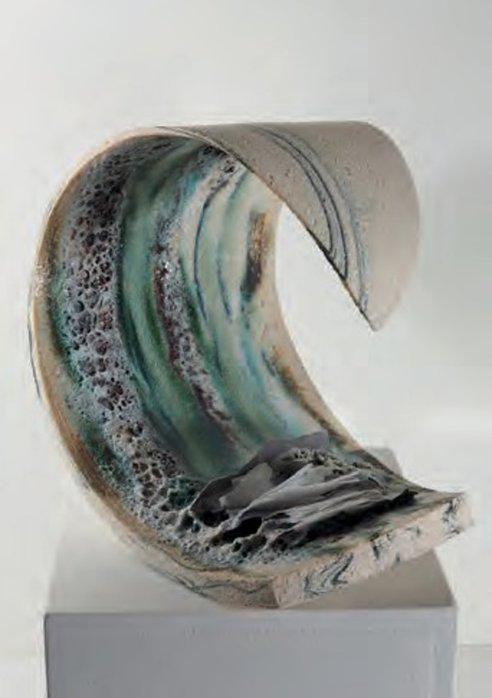

Jane Samuel

Wrth gael fy ysbrydoli’n weledol gan arfordir Môn a chregyn wedi torri, dw i’n creu cerfluniau cerameg sy’n adlewyrchu’n taith trwy fywyd, gan atseinio’r nerth a’r breuder sydd ynom ni.
Visually inspired by the Anglesey coastline and broken shells, I create ceramic sculptures that reflect our journey through life, resonating the strength and fragility that is within us.
01407 810799 / 07881 461626
jane@js-ceramics.co.uk
www.js-ceramics.co.uk
TŶ PLANT, THE BOATPOOL, RHOSNEIGR, LL64 5YJ
Cyffordd 5 o’r A55, dilynwch A4080 i Rhosneigr. Wrth dŵr y cloc, trowch i’r chwith i lawr y stryd fawr, ar ôl y siop ewch ymlaen ymhellach am tua 200 llath, mae gi.t las ar y dde gydag arwydd am JS Ceramics.
J5 off the A55, follow A4080 to Rhosneigr. At the clock tower turn left down the high street, after the shops continue approx a further 200yds, blue gate on right with sign for JS Ceramics.